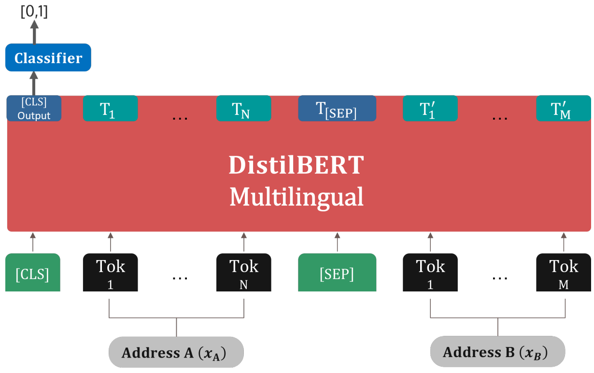

The BI+CE architecture approaches postal address matching as a two-stage semantic similarity task.
Instead of relying on symbolic string metrics, the system retrieves likely candidates using dense embeddings
and then performs deep pairwise reasoning to determine which normalized address truly corresponds to the
provided unnormalized input. This results in highly accurate retrieval even when the original address is noisy,
incomplete, or formatted inconsistently.
|
Artery Type
R
|
Artery Name
Bartolomeu Dias
|
Door ID
4
|
Accomodation ID
9º Dto.
|
CP4-CP3
2685-187
|
Postal Designation of ZIP-Code
Portela LRS
|
Figure 1: Example of a normalized portuguese address
Before processing any real-world queries, the system embeds every normalized Portuguese address in the
database. Each address is passed through a bi-encoder to produce a fixed-length vector representation. This
produces a static embedding index that enables fast cosine-similarity retrieval.
Example: Each normalized postal record is transformed into:
ID_001: 512-dim embedding of “Rua das Flores 12, 1200-045 Lisboa”
ID_002: 512-dim embedding of “Avenida do Mar 58, 9000-206 Funchal”
ID_003: 512-dim embedding of “Travessa Azul 3, 4000-281 Porto”
These vectors form the searchable embedding database.
Figure 2: Interactive bi-encoder architecture.
2) ZIP-Based Filtering for Efficient Retrieval
To reduce search space and accelerate inference, embeddings are partitioned into nine auxiliary groups
according to the first digit of the CP4 postal code. When a new query arrives, only the relevant group
is scanned. This preserves efficiency without reducing recall.
Example: A query with CP4 starting in 1 is compared only against:
Group_1 → All normalized addresses whose CP4 begins with “1”
Group_2 is ignored, Group_3 is ignored, …
This reduces unnecessary comparisons and increases throughput.
3) Bi-Encoder Retrieval
When an unnormalized address is provided, it is embedded using the same bi-encoder. The embedding is then
compared against the filtered group using cosine similarity, producing the top-k most similar candidates.
The system uses k = 10, which was found to reliably include the correct address in nearly all cases.
Example: Query → “Rua Flor 12 Lisboa”
Top-10 retrieved candidates (ranked by cosine similarity):
• ID_30294
• ID_18302
• ID_94751
… (remaining 7)
The correct normalized address usually appears within this list.
4) Cross-Encoder Reranking
Each of the top-10 candidate pairs is then passed through a cross-encoder. Both addresses are fed jointly
as a sentence pair, allowing the transformer to evaluate their semantic relationship in detail. The
cross-encoder outputs a matching probability for every candidate.

Figure 3: Cross-encoder architecture for address matching classification (adapted from [3] and [14])
Example:
Cross-encoder scores (higher = more likely match):
ID_30294 → 0.997
ID_18302 → 0.843
ID_94751 → 0.011
The candidate with the highest probability becomes the final match.
Choosing the matching probability threshold
After reranking, the system applies a threshold to determine which predictions can be safely automated.
Evaluations show that a cutoff at 0.90 maximizes operational reliability, retaining nearly all
correct predictions while ensuring ambiguous cases are routed for manual review.
The histogram below illustrates why this threshold works so well. The bi-encoder (left) concentrates nearly all
predictions at very high probability, making it difficult to distinguish confident from uncertain matches.
In contrast, the BI+CE model (right) creates clear separation: low-confidence predictions cluster near 0,
while high-confidence predictions cluster near 1, enabling effective automated filtering at τ = 0.90.
Why this works
The bi-encoder provides fast, scalable retrieval by capturing coarse semantic similarity, while the
cross-encoder provides deeper contextual reasoning necessary for final disambiguation. Together, they deliver
high precision and robustness, even when unnormalized addresses contain typos, missing fields, or nonstandard
formatting.
Performance at Operational Granularity
With thresholding applied, door-level accuracy reaches 98.35%, and artery-level accuracy rises to
99.71%. Only about 18% of addresses require manual intervention, representing a substantial
improvement over traditional string-based methods.
Table: Retrieval and accuracy statistics across model components (adapted from the experimental results).
| Component |
Metric |
Value |
| Bi-Encoder |
Top-10 Recall |
99.41% |
| BI+CE (No Threshold) |
Door-Level Accuracy |
95.32% |
| BI+CE (τ = 0.90) |
Door-Level Accuracy |
98.35% |
| BI+CE System |
Artery-Level Accuracy (τ = 0.90) |
99.71% |